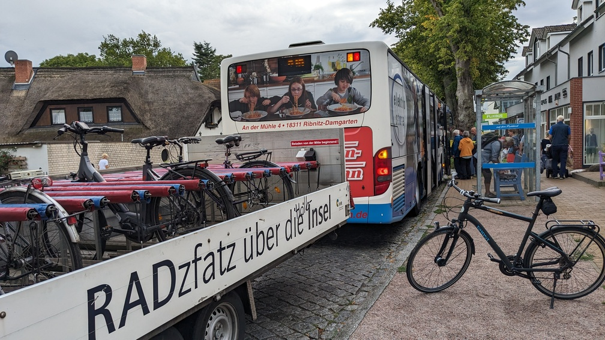

Radexpress Hamburg
Finkenwerder - Wilhelmsburg - Moorfleet - Billstedt
Momentan besitzen die Stadtteile Finkenwerder, Wilhelmsburg und Billstedt des Bezirks Hamburg Mitte über keine leistungsfähige Direktverbindung per ÖPNV. Radverkehr ist nur über große Umwege möglich.
In diesen Stadtteilen leben und arbeiten insgesamt weit über 100.000 Menschen, von denen dadurch viele auf ein Auto angewiesen sind. Durch neue Quartiere werden es in den kommenden Jahren noch mehr.
Abhilfe könnte ein Expressbus mit Fahrradmitnahme schaffen. Mehr dazu: Mit dem Rad-Expressbus über die Elbe.
Vorteile des Rad-Expressbusses
- Verbindet Stadtteile mit insgesamt rund 140.000 Einwohnern miteinander, die bisher keine Direktverbindung haben.
- Reduziert bisherige Fahrtzeiten zwischen den Stadtteilen um bis zu 30 Minuten.
- Bietet eine fahrradkompatible Lösung für Köhlbrandquerung
- Bis zum Neubau der A1-Elbbrücken wichtige und alternativlose Fahrradverbindung in den Hamburger Osten
- Durch die Fahrradmitnahme kann jede Haltestelle ein etwa 10 Mal so großes Einzugsgebiet vorweisen als ein herkömmlicher Bus (mit dem Rad ca 5km² innerhalb von 5min erreichbar (hellgrün), statt 0,5km² zu Fuß (dunkelgrün)).
- Alternative zur störungsanfälligen S-Bahn über die Elbbrücken
- Vermeidet unnötige Umstiege am überlasteten Hauptbahnhof
- Alternative zu den oft unzuverlässigen Fährverbindungen
- Entlastet die Stadtteile von Autoverkehr und reduziert langfristig den Parkdruck.
- Geld, das nicht fürs Auto ausgegeben werden muss, entlastet Familien und kann lokal investiert werden.